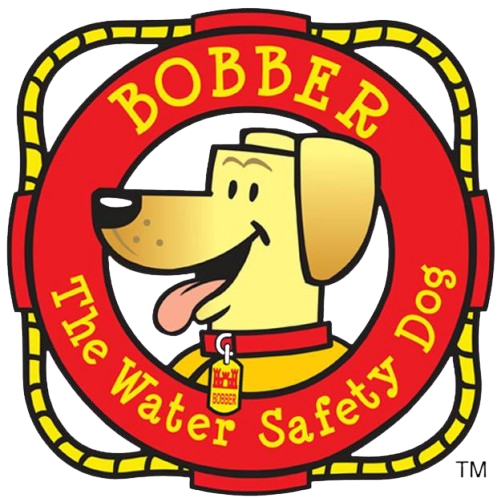

Bobber · seguridad acuática
¡La pesca es mejor
con chaleco salvavidas!
Disfruta el día en el agua. Regresa a casa con seguridad.
Usa siempre un chaleco salvavidas bien ajustado cuando estés en un bote.
Versión complementaria en español de “Fishing Is Best in a Life Vest” de USACE.BORRADOR DE TRADUCCIÓN · REQUIERE REVISIÓN ANTES DE DISTRIBUIR